Kapak · anı dondur
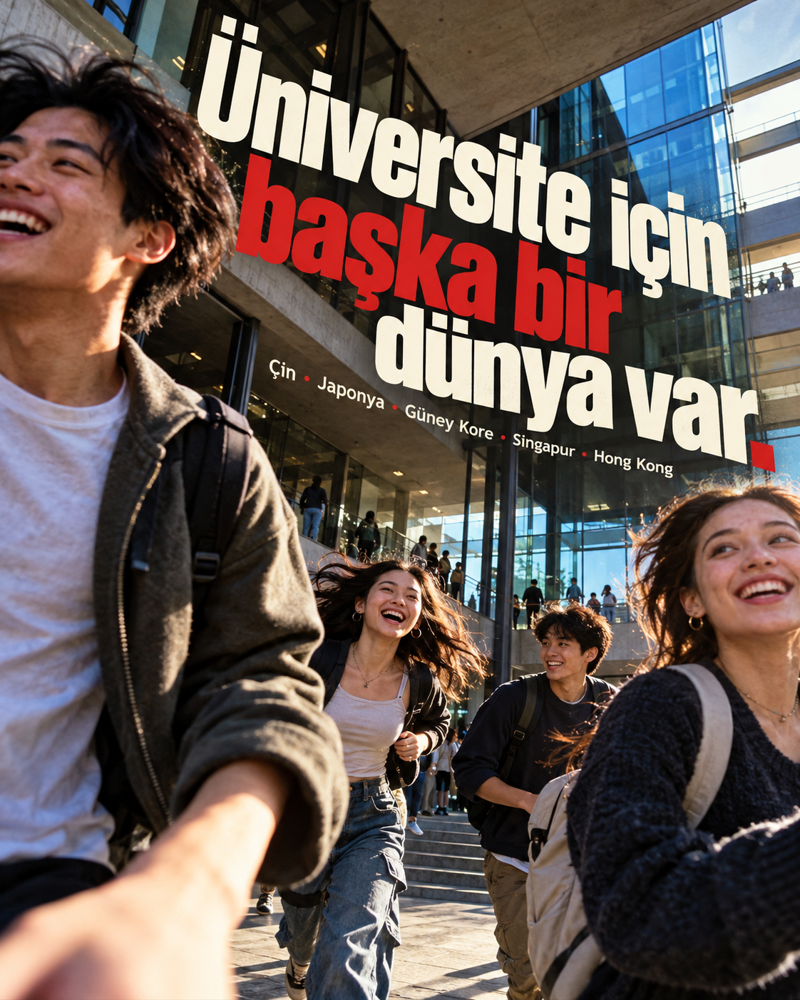
Kampanya satırı: “Üniversite için başka bir dünya var.” · Hedefler: Çin, Japonya, Güney Kore, Singapur, Hong Kong.
Üç ayrı görsel dünya; her biri bir kapak ve bir iç carousel kompozisyonu. Önce altı bitmiş görseli küçük ölçekte yan yana karşılaştırın. Her görselde solda orijinal ChatGPT Image kompozisyonu, sağda ise aynı kompozisyona sonradan eklenen tam kanonik logo SVG’si bulunur.
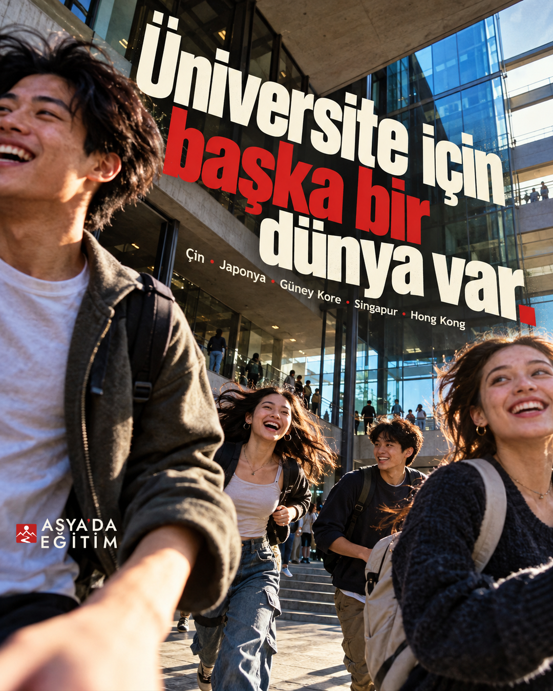
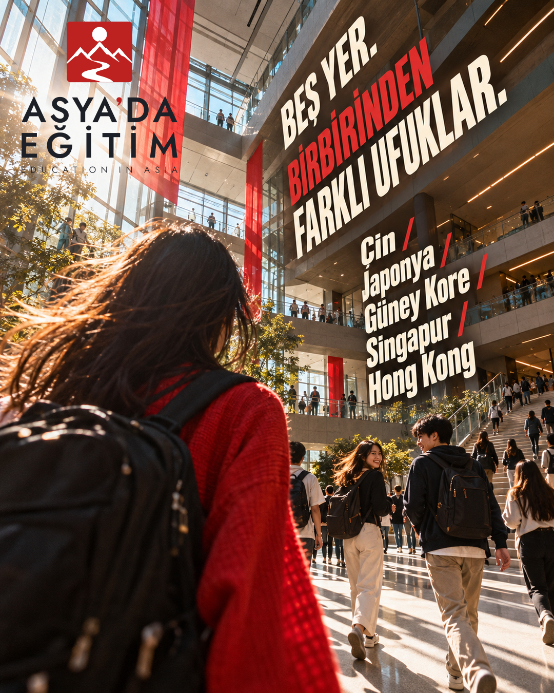
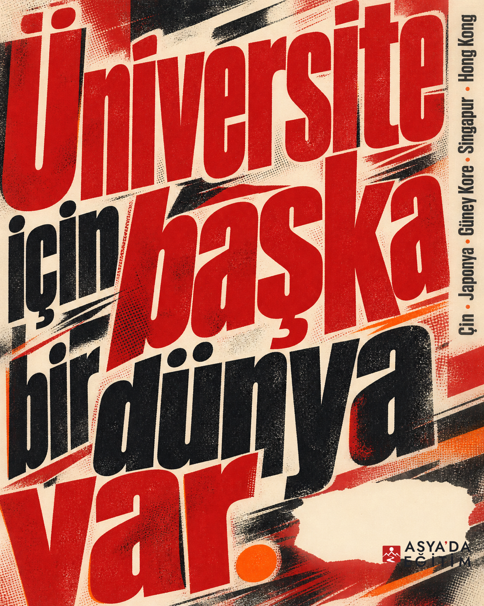
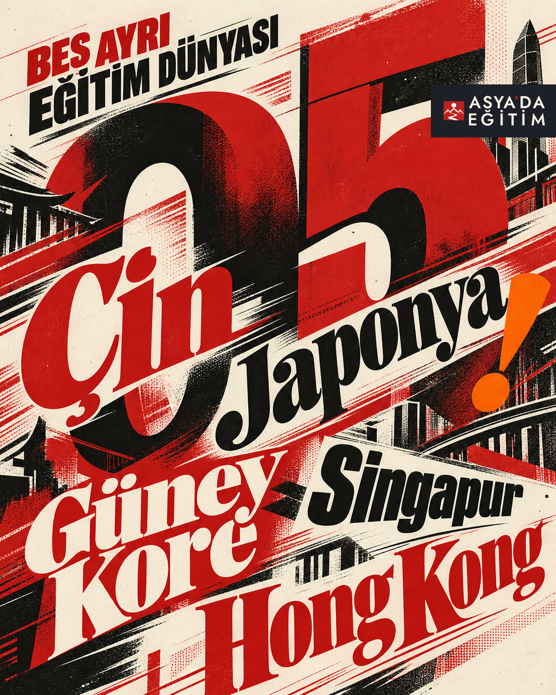
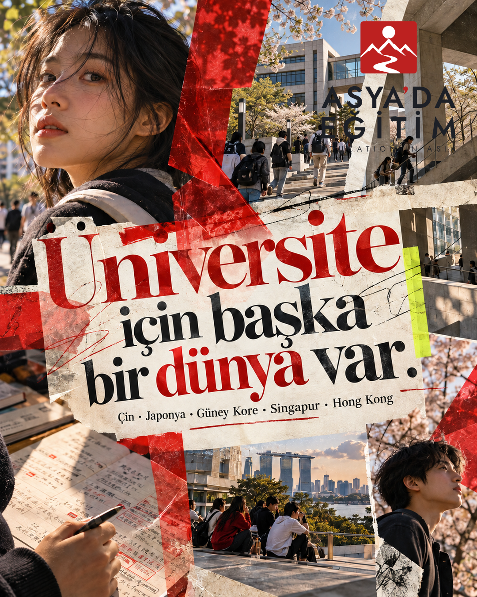
Fotoğraf kadrajı ana taşıyıcı: yakın ölçekli öğrenci enerjisi, hareket hissi, büyük ve sahnenin diyagonaliyle yarışan tipografi. İç slayt da kapaktan farklı bir fotoğraf anı ve başka bir tipografik eksen kullanıyor.

Kampanya satırı: “Üniversite için başka bir dünya var.” · Hedefler: Çin, Japonya, Güney Kore, Singapur, Hong Kong.
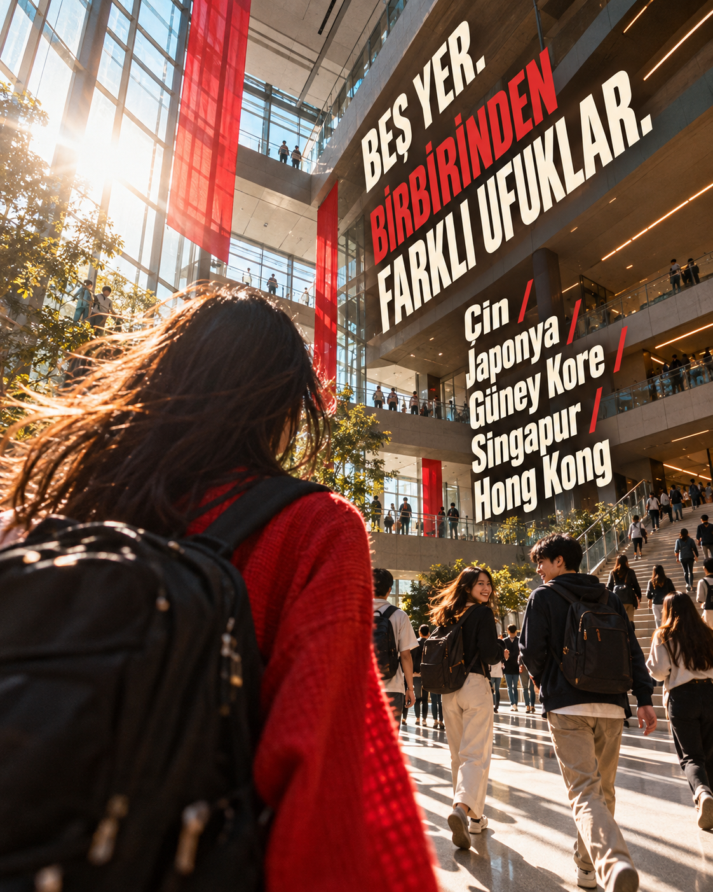
Beş hedef ülke, görüntü üzerine yerleştirilen hareketli editoryal tipografiyle taşınıyor.
Not: Bu ilk görsel keşfinde destek başlıkları AI tarafından görselleştirildi; seçilen yönün nihai Türkçe metni insan onayından sonra doğru diakritiklerle yeniden dizilecek.
Fotoğraf yok. Harfler hem imge hem hareket: kesilen dev ölçekler, karşı yönlü dizilim, baskı dokusu ve yüksek yoğunluk. Logo, tipografik alanın ürettiği boşluğa küçük dijital kilit olarak giriyor; sabit footer değil.
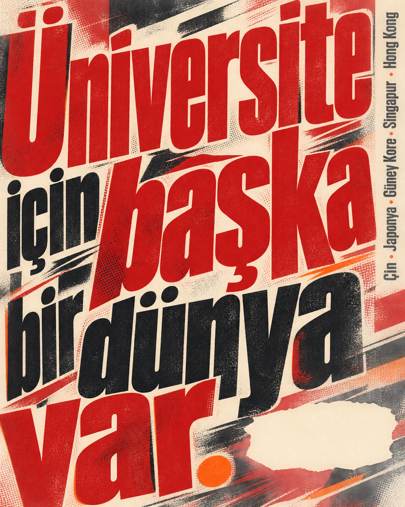
Kampanya satırı ve beş hedef, tek bir tipografik yüzeyde. Logo, kompozisyon içindeki alt-sağ kesitte.
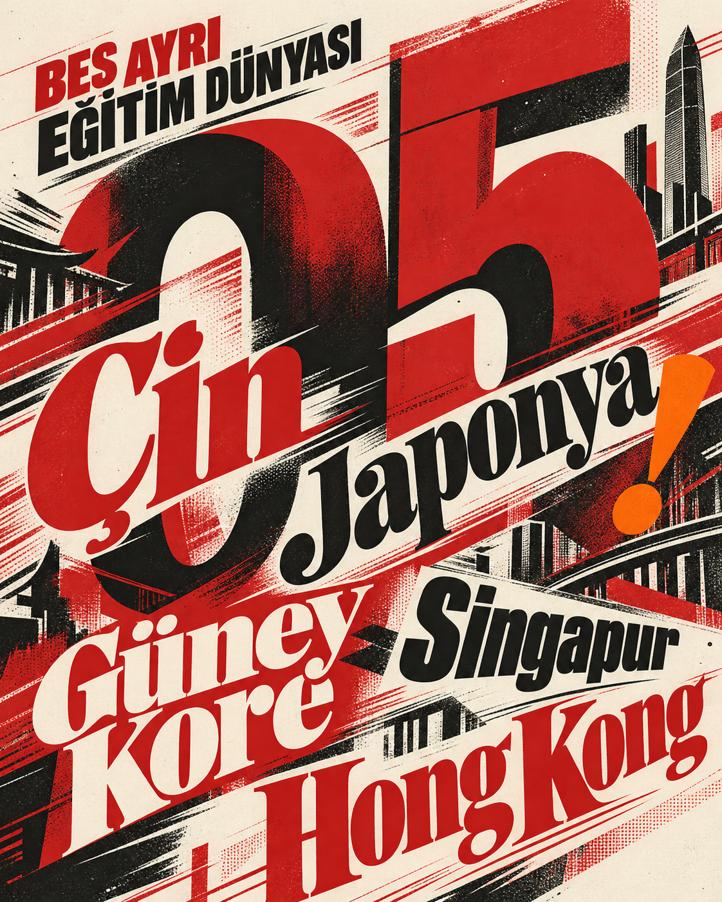
Ülke isimleri kompozisyonun ana tipografik kütlelerine dönüşüyor; fotoğraf veya kart/list layout’u kullanılmıyor.
Not: AI destek başlığındaki Türkçe karakterler nihai metin olarak kabul edilmemeli; doğru kopya seçim sonrası yeniden dizilecek.
Farklı öğrenci ve kampüs anları tek karede, kesik fotoğraf katmanları, baskı yüzeyleri ve transparan kâğıt müdahaleleriyle birleşiyor. Kapak yoğun bir dergi kapağı; iç sayfa ise büyük indeks rakamı ve parçalı sahnelerle kendi ritmini kuruyor.
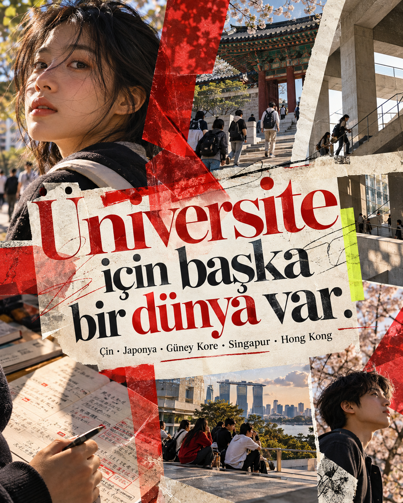
İlk görüntüdeki tapınak/pagoda çağrışımlı mimari fragman, tek bir hedefli düzenlemede çağdaş üniversite mimarisiyle değiştirildi.
Logo eklenmeden önce düzeltilmiş kompozisyonu gör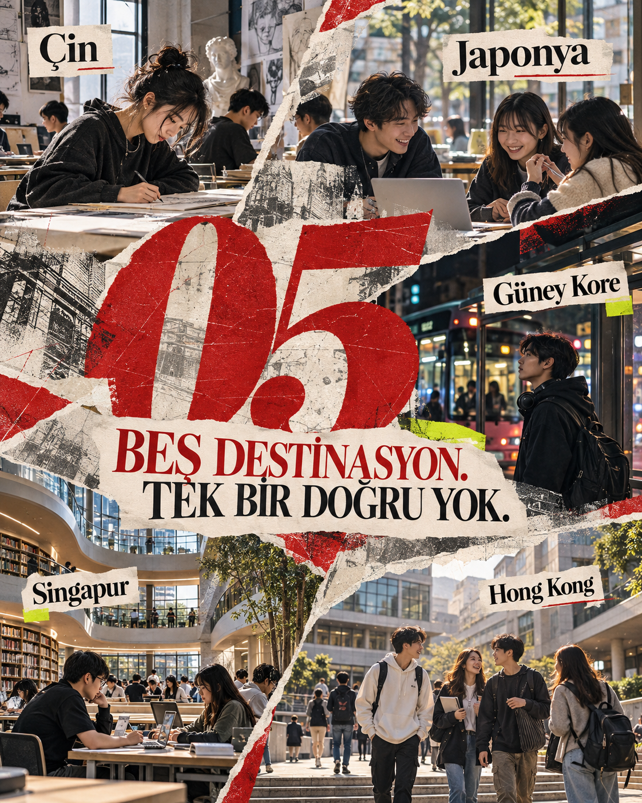
Beş ülke adı, beş farklı fotoğraf kırıntısına eşlik eden editoryal etiketler; ortak şablon/ızgara yok.
AI ve kopya: 8 gpt-image-2 üretimi, 3 düzenleme işlemi yapıldı. Galeride 6 seçilmiş kompozisyon var; 2 alternatif üretim ve 2 yazı düzeltme denemesi nihai görsele alınmadı. C kapağındaki tek hedefli edit kabul edildi. Görseller temsili AI üretimidir; gerçek üniversite/kampüs belgesi veya belirli bir destinasyon iddiası değildir. Logo SVG’leri image model’e verilmedi; tam kanonik lockup’lar sonradan, kompozisyona göre ayrı ayrı eklendi.
Altı kompozisyon, üretim ve kanonik logo manifestosu · Altılı kontak sayfası